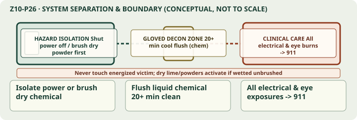

Z10-P26 · Wilderness medicine · New manuscript
Handle chemical and electrical burns with scene isolation before care
Protect rescuers from live electrical current or hazardous chemicals while initiating safe flushing and clinical escalation.
When it applies · Fuel/battery/caustic chemical skin splashes or contact with energized wiring, generators, or lightning.
Equipment · Dry non-conductive isolation awareness, clean running water, protective gloves, and Poison Control / 911 contact.

Actions
- For electrical injury, NEVER touch the person until the power source is confirmed shut off by utility/breaker controls (stay well back from downed power lines and call 911); remember electrical burns cause severe hidden internal tissue and heart-rhythm damage even with tiny skin marks.[M07, T01, D04]
- For dry chemical powders on skin, brush loose dry powder off with gloved hands or cloth BEFORE flushing continuously with copious cool running water for at least 20 minutes while removing contaminated clothing.[M07, M15]
- Call 911 for ALL electrical burns, chemical eye splashes, large/painful chemical burns, or breathing irritation, and save the exact chemical label for Poison Control/EMS.[M07, M16, T02]
Failure recognition · Grabbing a person still touching an energized generator cord, or pouring a tiny cup of water onto dry caustic lime powder so it activates and spreads across skin.[M07, T01]
Verify · Confirm power or chemical source is isolated, rescuers avoided contamination, and exact chemical identity or voltage context is logged for EMS.[M07, M16, T01]
Stop or change course · Any electrical contact, loss of consciousness, chest pain, or chemical eye/airway exposure requires immediate emergency medical evaluation.[M07, M18, T02]
Evidence and editorial notes
- D04 · FEMA / Ready.gov · Thunderstorms and Lightning (current web edition)
- Section: Severe Thunderstorms, Straight-Line Winds, Hail, and Lightning · Conditions: Severe Thunderstorm Warnings, derechos, and electrical storms
Support: Move indoors to a substantial building immediately when thunder is heard or severe wind warnings issue; stay away from windows, corded appliances, and plumbing during lightning, and avoid downed limbs and energized downed lines after derechos.
Limitations: Straight-line derecho winds can rival tornado damage across hundreds of miles and cause multi-day regional power blackouts. · Conflicting evidence: None; integrates with E07 and E18.
Editorial note: Grounds severe-storm, hail, and straight-line wind response cards. · Specialist reviewer: Meteorology and utility safety
Primary source · checked 2026-11-24 - M07 · NIH / MedlinePlus · Burns (current web edition)
- Section: Thermal Burn Cooling, Covering, and Severity Escalation · Conditions: Minor vs major thermal burns (flame, scald, contact)
Support: Cool minor superficial burns with cool (not icy) running water, remove constricting rings/clothing not stuck to skin, cover loosely with clean non-stick dressing, and seek emergency care for deep, large, facial, hand, foot, genital, joint, or airway burns.
Limitations: Never apply ice, butter, grease, or ointments to fresh burns, and do not pop intact blisters. · Conflicting evidence: None; aligns with ARC/ABA lay burn first aid.
Editorial note: Establishes burn-cooling limits and automatic clinical-escalation zones. · Specialist reviewer: Burn care and wilderness medicine
Primary source · checked 2026-11-24 - M15 · NIH / MedlinePlus · Poisoning (current web edition)
- Section: Suspected Poisoning, Ingestion, and Toxic Exposure · Conditions: Accidental ingestion, inhalation, or skin/eye contact with toxic plants, chemicals, or medications
Support: Call 911 immediately if the person is unresponsive, seizing, or struggling to breathe; otherwise contact Poison Control (1-800-222-1222 in the U.S.) with exact substance details and do not induce vomiting unless directed.
Limitations: Improvised emetics or charcoal can worsen caustic or hydrocarbon injury. · Conflicting evidence: None; aligns with Poison Control guidance.
Editorial note: Separates 911 life-threat activation from Poison Control guidance. · Specialist reviewer: Medical toxicology and poison control
Primary source · checked 2026-11-24 - M16 · National Capital Poison Center · Poison Control Emergency Guidance (current web edition)
- Section: Emergency Poison Help Guidance and Substance Documentation · Conditions: U.S. non-life-threatening or evolving poisoning exposure
Support: Save the container, plant sample (handled safely), or chemical label for Poison Control and EMS; follow exact dispatcher or toxicology specialist instructions without giving home remedies.
Limitations: Requires phone/comms access; remote settings require early evacuation for unknown toxic ingestions. · Conflicting evidence: None; reinforces Poison Control hotline and container preservation.
Editorial note: Guides documentation and anti-folklore poison response in Z10. · Specialist reviewer: Poison control and emergency medicine
Primary source · checked 2026-11-24 - M18 · NIH / MedlinePlus · Eye Injuries (current web edition)
- Section: Eye Injuries, Flushing, and Penetrating Trauma Limits · Conditions: Dust/chemical splash vs blunt or penetrating eye trauma
Support: Flush chemical splashes or loose surface grit gently with clean potable water or sterile saline; never rub the eye, never remove an embedded object, shield without pressure, and seek urgent eye care.
Limitations: Forcing open swollen eyelids or pulling embedded debris causes irreversible vision loss. · Conflicting evidence: None; separates surface irrigation from penetrating-eye shield protection.
Editorial note: Core eye-trauma decision boundary in Z10. · Specialist reviewer: Ophthalmology and emergency medicine
Primary source · checked 2026-11-24 - T01 · American Red Cross · First Aid Steps (current web edition)
- Section: First Aid Steps > Check the scene; check the person · Conditions: Lay responder in United States; assess safety before contact
Support: Check scene safety, responsiveness, breathing and immediately life-threatening conditions.
Limitations: Lay guidance does not replace advanced clinical or rescue protocols. · Conflicting evidence: None; universal first-response opening gate.
Editorial note: Anchors scene-safety-first rule across Z01. · Specialist reviewer: EMS and wilderness medicine
Primary source · checked 2026-11-24 - T02 · American Red Cross · First Aid Steps (current web edition)
- Section: First Aid Steps > Call 9-1-1 · Conditions: Lay emergency response to unresponsiveness, abnormal breathing or severe bleeding
Support: Activate EMS and get needed equipment. Follow dispatcher directions and act within training.
Limitations: Remote locations may delay EMS arrival, requiring sustained stabilization after activation. · Conflicting evidence: None; aligns with NPS-E.
Editorial note: Mandates early emergency activation and dispatcher adherence. · Specialist reviewer: EMS and wilderness medicine
Primary source · checked 2026-11-24
Source lineage · NIH MedlinePlus Burns and Poison Control; new manuscript · Classification · New manuscript.